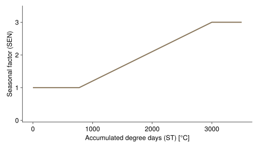

Senescence
GrasslandTraitSim.senescence! — Functionsenescence!(; container, ST, biomass)
Calculate the biomass that dies due to senescence.
The basic senescence rate is linked to the specific leaf area via the leaf lifespan. The equation by [6] is used for calculating the leaf lifespan based on the specific leaf area (see estimates for LEAVES/BROAD in Table 1 of [6]). The original equation calculates the leaf lifespan in months and the specific leaf area in $cm^2 \cdot g^{-1}$. The specific leaf area was converted to the equation's unit, and the equation was converted to days:
\[\begin{align*} LL_s &= 10^{\left(\alpha_{ll} - \text{log}_{10}(10^4 \cdot SLA_s)\right) / \beta_{ll}} \cdot \frac{365.25}{12} \\ SEN_{base, s} &= \alpha_{SEN} + \beta_{SEN} \cdot LL_s^{-1} \end{align*}\]
Parameter, see also SimulationParameter:
- $\alpha_{ll}$ (
α_ll) intercept of the equation that relates the specific leaf area to the leaf lifespan [-] - $\beta_{ll}$ (
β_ll) slope of the equation that relates the specific leaf area to the leaf lifespan [-] - $\alpha_{SEN}$ (
α_sen) intercept of the equation that relates the leaf lifespan to the senescence rate [-] - $\beta_{SEN}$ (
β_sen) slope of the equation that relates the leaf lifespan to the senescence rate [d]
Variables:
- $SLA_s$ (
sla) specific leaf area [m² g⁻¹] - $LL_s$ (
leaflifespan) leaf lifespan [d]
Output:
- $SEN_{base, s}$ (
μ) basic senescence rate [-]

\[S_{txys} = μ_s \cdot \text{SEN}_t \cdot B_{txys}\]
The senescence process is based on the senescence rate μ and a seasonal component of the senescence.
μbasic senescence rate, seesenescence_rate!SENseasonal component of the senescence (between 1 and 3), seeseasonal_component_senescenceBbiomass dry weight [kg ha⁻¹]
GrasslandTraitSim.seasonal_component_senescence — Functionseasonal_component_senescence(; container, ST)
Seasonal factor for the senescence rate.
\[\begin{align*} SEN &= \begin{cases} 1 & \text{if} \;\; ST < Ψ_1 \\ 1+(SEN_{max} - 1) \frac{ST - Ψ_1}{Ψ_2 - Ψ_1} & \text{if}\;\; Ψ_1 < ST < Ψ_2 \\ SEN_{max} & \text{if}\;\; ST > Ψ_2 \end{cases} \\ \\ \end{align*}\]
- $ST$ annual cumulative temperature [$°C$]
- $Ψ₁=775$ [$°C$]
- $Ψ₂=3000$ [$°C$]
- $SEN_{max}=3$
